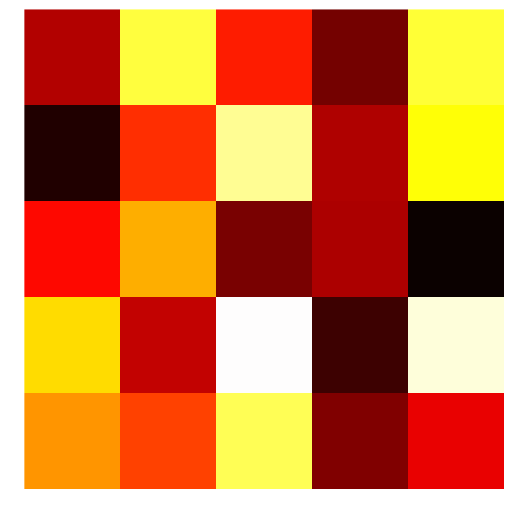
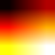

How to remove axis, legends, and white padding
I would like to apply colormap to an image, and write the resulting image, without using axes, labels, titles, or anything automatically added by matplotlib. Here is what I did:
def make_image(inputname,outputname):
data = mpimg.imread(inputname)[:,:,0]
fig = plt.imshow(data)
fig.set_cmap('hot')
fig.axes.get_xaxis().set_visible(False)
fig.axes.get_yaxis().set_visible(False)
plt.savefig(outputname)
It successfully removes the axis of the figure, but the figure saved, presents a white padding, and a frame around the actual image.
How can I remove them (at least the white padding)?
Answer
The axis('off') method resolves one of the problems more succinctly than
separately changing each axis and border. It still leaves the white space
around the border however. Adding bbox_inches='tight' to the savefig
command almost gets you there; you can see in the example below that the white
space left is much smaller, but still present.
Newer versions of matplotlib may require bbox_inches=0 instead of the string
'tight' (via @episodeyang and @kadrach)
from numpy import random import matplotlib.pyplot as plt data = random.random((5,5)) img = plt.imshow(data, interpolation='nearest') img.set_cmap('hot') plt.axis('off') plt.savefig("test.png", bbox_inches='tight')

Suggest
I learned this trick from matehat, here:
import matplotlib.pyplot as plt import numpy as np def make_image(data, outputname, size=(1, 1), dpi=80): fig = plt.figure() fig.set_size_inches(size) ax = plt.Axes(fig, [0., 0., 1., 1.]) ax.set_axis_off() fig.add_axes(ax) plt.set_cmap('hot') ax.imshow(data, aspect='equal') plt.savefig(outputname, dpi=dpi) # data = mpimg.imread(inputname)[:,:,0] data = np.arange(1,10).reshape((3, 3)) make_image(data, '/tmp/out.png')
yields
